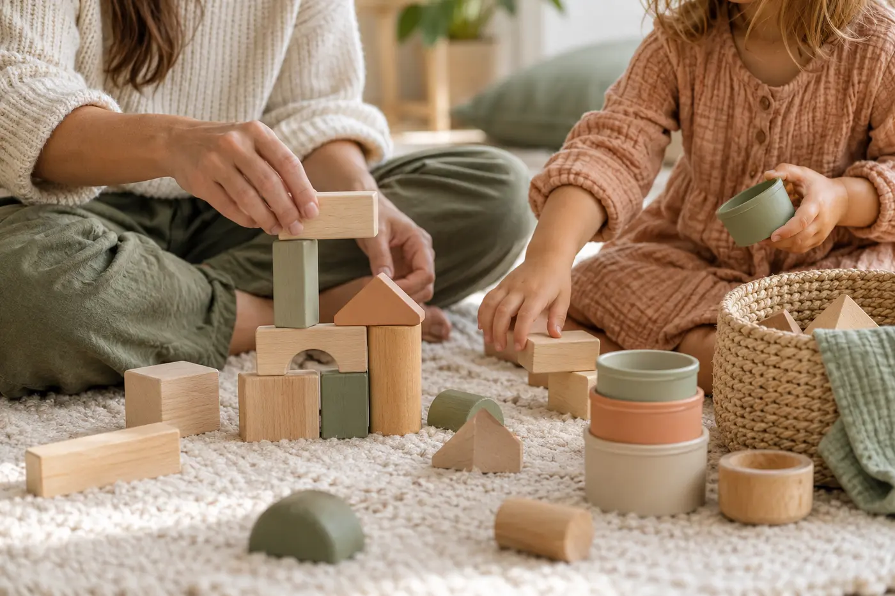

For parents and caregivers
Support for the moments that feel hard to untangle.
Talk through what you are noticing, understand the developmental context and leave with practical ideas to try.
What we can explore
Everyday questions about development and family life.
- Emotional development and co-regulation
- Daily routines, transitions and sleep-related routines
- Age-appropriate behaviour guidance
- Communication, interaction and play
- Preparing for childcare or school transitions
- Participation, belonging and inclusion

What to expect
A collaborative, practical process.
- 01
Share the concern
Describe what you are seeing, what matters most and what you have already tried.
- 02
Build understanding
Consider development, relationships, routines, communication and the surrounding environment.
- 03
Plan next steps
Leave with realistic strategies, useful resources and referral guidance when needed.
Book a consultation
You do not have to figure it out alone.
Share what you are navigating and request a time to speak with Stars Haven Academy.